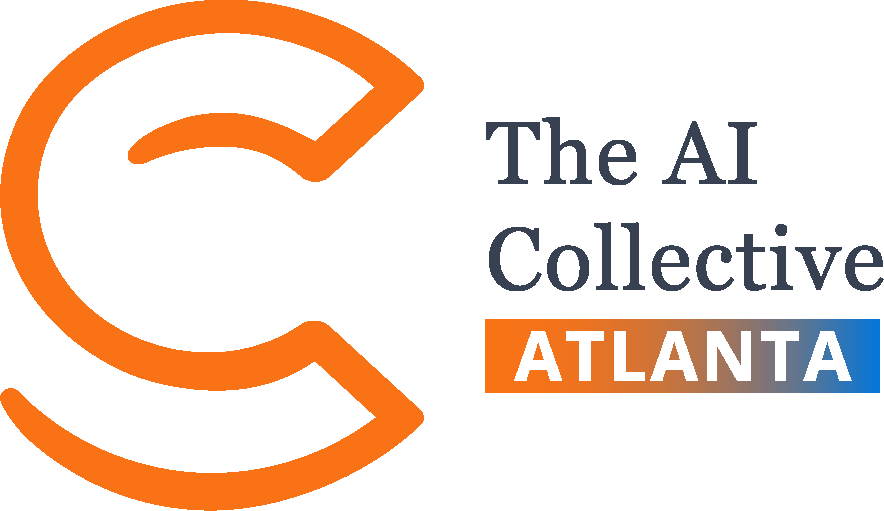

Head of Revenue & Retention · Global Leadership Team
The AI Collective
I work with regional and chapter leaders around the world, building the tools, programs, and playbooks that help chapters grow and keep their members.
I founded the Atlanta chapter in July 2025. It passed 4,000 members in its first year through nearly 100 in-person events. I'm also Region Director for the Southeast US.
More on community